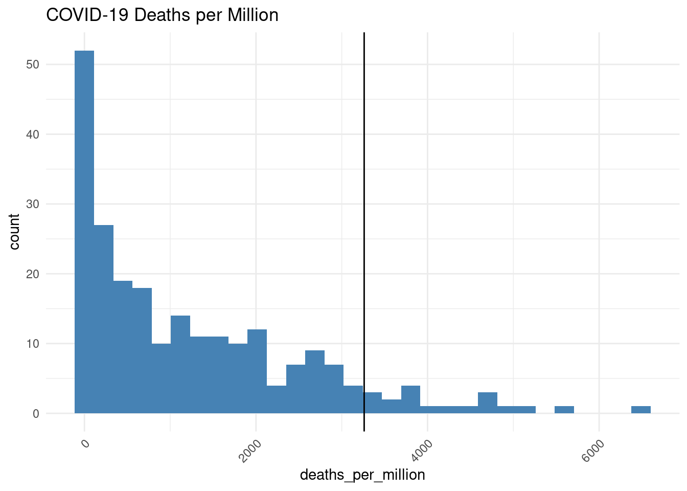
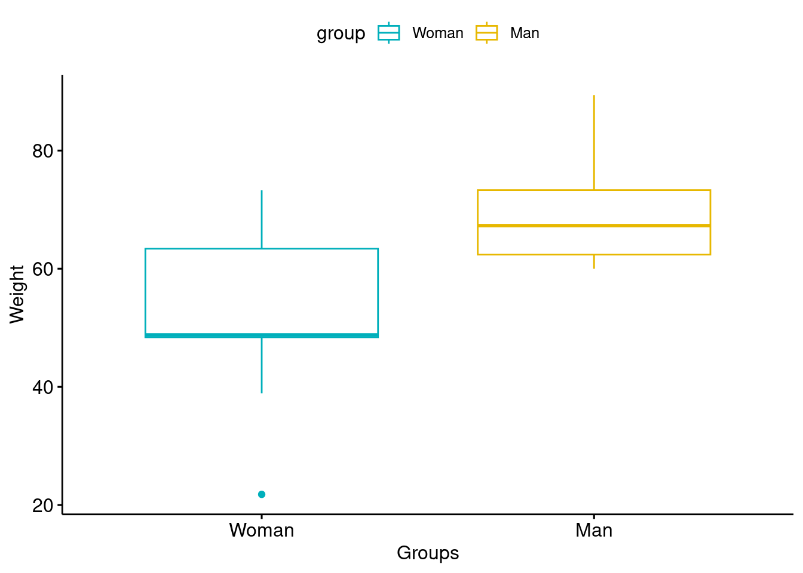
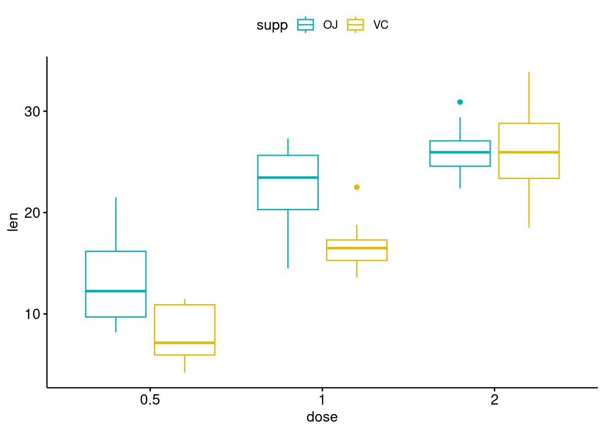

set.seed(586)x<-rnorm(50)t.test(x, mu =0, alternative ="two.sided")
One Sample t-test
data: x
t = -0.31154, df = 49, p-value = 0.7567
alternative hypothesis: true mean is not equal to 0
95 percent confidence interval:
-0.2633214 0.1926358
sample estimates:
mean of x
-0.03534281
penguins %>%filter(species=="Adelie") %>%select(bill_length_mm)->xt.test(x, mu =43.92, alternative ="two.sided")
One Sample t-test
data: x
t = -23.662, df = 150, p-value < 2.2e-16
alternative hypothesis: true mean is not equal to 43.92
95 percent confidence interval:
38.36312 39.21966
sample estimates:
mean of x
38.79139
penguins %>%ggdensity(x ="bill_length_mm",add ="mean", rug =TRUE,color ="#00AFBB", fill ="#00AFBB")+geom_vline(xintercept =38.79139)
Warning: `geom_vline()`: Ignoring `mapping` because `xintercept` was provided.
Warning: `geom_vline()`: Ignoring `data` because `xintercept` was provided.
Warning: Removed 2 rows containing non-finite outside the scale range
(`stat_density()`).
# Fetch the data from Our World in Data. RUN ONLY ONCEurl <-"https://covid.ourworldindata.org/data/owid-covid-data.csv"df <-read_csv(url)
Rows: 429435 Columns: 67
── Column specification ────────────────────────────────────────────────────────
Delimiter: ","
chr (4): iso_code, continent, location, tests_units
dbl (62): total_cases, new_cases, new_cases_smoothed, total_deaths, new_dea...
date (1): date
ℹ Use `spec()` to retrieve the full column specification for this data.
ℹ Specify the column types or set `show_col_types = FALSE` to quiet this message.
# Prepare the datadf_latest <- df %>%group_by(location) %>%slice_tail(n =1) %>%mutate(deaths_per_million = total_deaths / population *1000000)df_latest %>%filter(location=="Brazil") %>%select(deaths_per_million)
Adding missing grouping variables: `location`
# A tibble: 1 × 2
# Groups: location [1]
location deaths_per_million
<chr> <dbl>
1 Brazil 3261.
`stat_bin()` using `bins = 30`. Pick better value with `binwidth`.
Warning: Removed 21 rows containing non-finite outside the scale range
(`stat_bin()`).

t.test(df_latest$deaths_per_million, mu =3261, alternative ="less")
One Sample t-test
data: df_latest$deaths_per_million
t = -23.694, df = 233, p-value < 2.2e-16
alternative hypothesis: true mean is less than 3261
95 percent confidence interval:
-Inf 1385.595
sample estimates:
mean of x
1245.092
Wilcoxon signed rank test with continuity correction
data: df_latest$deaths_per_million
V = 910, p-value < 2.2e-16
alternative hypothesis: true location is less than 3261
# Data in two numeric vectorswomen_weight <-c(38.9, 61.2, 73.3, 21.8, 63.4, 64.6, 48.4, 48.8, 48.5)men_weight <-c(67.8, 60, 63.4, 76, 89.4, 73.3, 67.3, 61.3, 62.4) # Create a data framemy_data <-data.frame( group =rep(c("Woman", "Man"), each =9),weight =c(women_weight, men_weight) )my_data
group weight
1 Woman 38.9
2 Woman 61.2
3 Woman 73.3
4 Woman 21.8
5 Woman 63.4
6 Woman 64.6
7 Woman 48.4
8 Woman 48.8
9 Woman 48.5
10 Man 67.8
11 Man 60.0
12 Man 63.4
13 Man 76.0
14 Man 89.4
15 Man 73.3
16 Man 67.3
17 Man 61.3
18 Man 62.4
library("ggpubr")ggboxplot(my_data, x ="group", y ="weight", color ="group", palette =c("#00AFBB", "#E7B800"),ylab ="Weight", xlab ="Groups")

Are the two samples independents?
Are the data from each of the 2 groups follow a normal distribution?
Do the two populations have the same variances?
Testing normal distribution
# Shapiro-Wilk normality test for Men's weightswith(my_data, shapiro.test(weight[group =="Man"]))# p = 0.1
Shapiro-Wilk normality test
data: weight[group == "Man"]
W = 0.86425, p-value = 0.1066
# Shapiro-Wilk normality test for Women's weightswith(my_data, shapiro.test(weight[group =="Woman"])) # p = 0.6
Shapiro-Wilk normality test
data: weight[group == "Woman"]
W = 0.94266, p-value = 0.6101
Testing equal variances
var.test(weight ~ group, data = my_data)
F test to compare two variances
data: weight by group
F = 0.36134, num df = 8, denom df = 8, p-value = 0.1714
alternative hypothesis: true ratio of variances is not equal to 1
95 percent confidence interval:
0.08150656 1.60191315
sample estimates:
ratio of variances
0.3613398
Two Sample t-test
data: women_weight and men_weight
t = -2.7842, df = 16, p-value = 0.01327
alternative hypothesis: true difference in means is not equal to 0
95 percent confidence interval:
-29.748019 -4.029759
sample estimates:
mean of x mean of y
52.10000 68.98889
Two Sample t-test
data: weight by group
t = 2.7842, df = 16, p-value = 0.01327
alternative hypothesis: true difference in means between group Man and group Woman is not equal to 0
95 percent confidence interval:
4.029759 29.748019
sample estimates:
mean in group Man mean in group Woman
68.98889 52.10000
wilcox.test(weight ~ group, data = my_data,exact =FALSE)
Wilcoxon rank sum test with continuity correction
data: weight by group
W = 66, p-value = 0.02712
alternative hypothesis: true location shift is not equal to 0
# Weight of the mice before treatmentblockA <-c(200.1, 190.9, 192.7, 213, 241.4, 196.9, 172.2, 185.5, 205.2, 193.7)# Weight of the mice after treatmentblockB <-c(392.9, 393.2, 345.1, 393, 434, 427.9, 422, 383.9, 392.3, 352.2)# Create a data framemy_data2 <-data.frame( group =rep(c("blockA", "blockB"), each =10),weight =c(blockA, blockB) )my_data2 %>%mutate(subject=rep(1:10,2)) %>%ggplot(aes(group,weight))+geom_boxplot(aes(fill=group), alpha=0.5)+geom_line(aes(group=subject))+geom_point(size=2)
ToothGrowth$dose<-as.factor(ToothGrowth$dose)ToothGrowth %>%ggboxplot(x ="dose", y ="len", color ="supp",palette =c("#00AFBB", "#E7B800"))

anova(lm(len~dose+supp, data = ToothGrowth))
Analysis of Variance Table
Response: len
Df Sum Sq Mean Sq F value Pr(>F)
dose 2 2426.43 1213.22 82.811 < 2.2e-16 ***
supp 1 205.35 205.35 14.017 0.0004293 ***
Residuals 56 820.43 14.65
---
Signif. codes: 0 '***' 0.001 '**' 0.01 '*' 0.05 '.' 0.1 ' ' 1
# These two calls are equivalentres.aov3 <-aov(len ~ supp * dose, data = ToothGrowth)res.aov3 <-aov(len ~ supp + dose + supp:dose, data = ToothGrowth)summary(res.aov3)